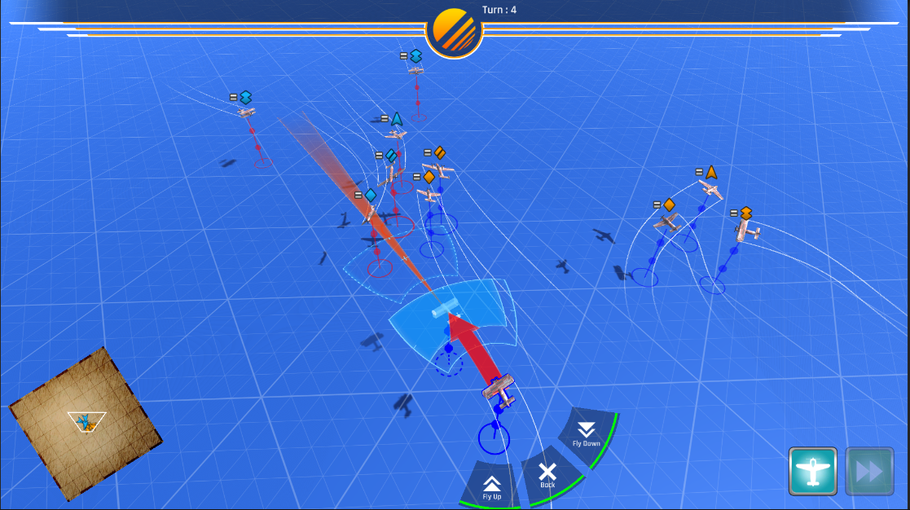
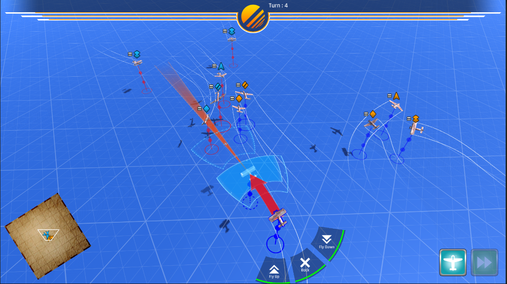

Club Grenade is a fast-paced multiplayer lite action game about defeating enemies with grenades and throwables only. The players must cooperate and fight through waves of enemies through the level, or be defeated by the enemy when within chaotic friendly fire. The game was inspired by Overcooked and its chaotic yet fun gameplay.
The game was a school project developed using Unity by a small team of 3 people that I led. The project was the winner of the Best Project Award and the Dean's Fund Award among all other projects from the engineering department.
Project website can be accessed here
Accomplishments
- Directed and led the whole project, guided and mentored members with zero experence throughout the whole development process.
- Created various shader including cel-shading toon shader and force field shader.
- Designed and createe most 2D and 3D assets using Photoshop and Blender.
- Designed structure and events of the entire level.
- Implemented input mode auto detection system to faciliate quick multiplayer joining.


 
